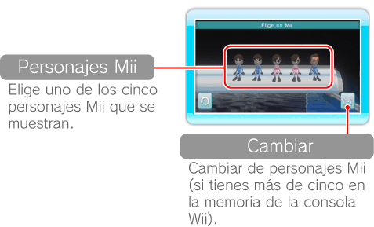
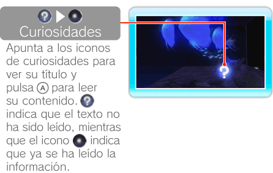

14 |
Nadar con un Mii |
 |
|
Selecciona en la pantalla del acuario. A continuación, podrás elegir con
 un Mii de entre los que están guardados en la memoria de la consola Wii. un Mii de entre los que están guardados en la memoria de la consola Wii. Nota: Puedes crear personajes Mii en el Canal Mii. Para obtener información sobre cómo crear personajes Mii, consulta la sección “El Canal Mii™” del manual de canales y configuración de la consola.

Apunta a un Mii y pulsa
. Entre los personajes Mii puede haber algunos creados de manera aleatoria.
Tras seleccionar un Mii, podrás verlo sumergido en el acuario, alimentar a los animales o buscar curiosidades.

Nota: Los personajes Mii se desplazan siguiendo circuitos preestablecidos que el jugador no puede alterar. |
 para volver a nadar.
para volver a nadar. |
 |
 |